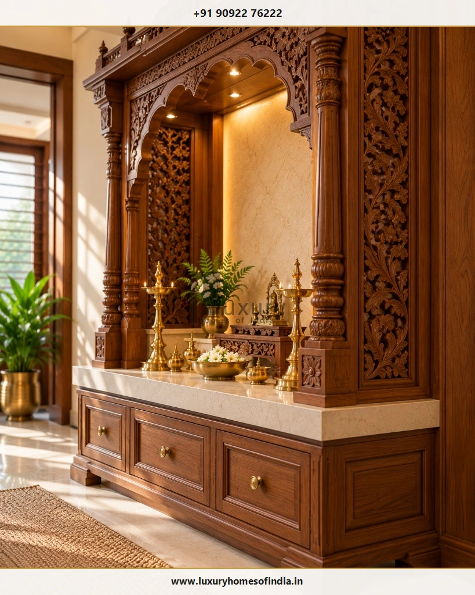
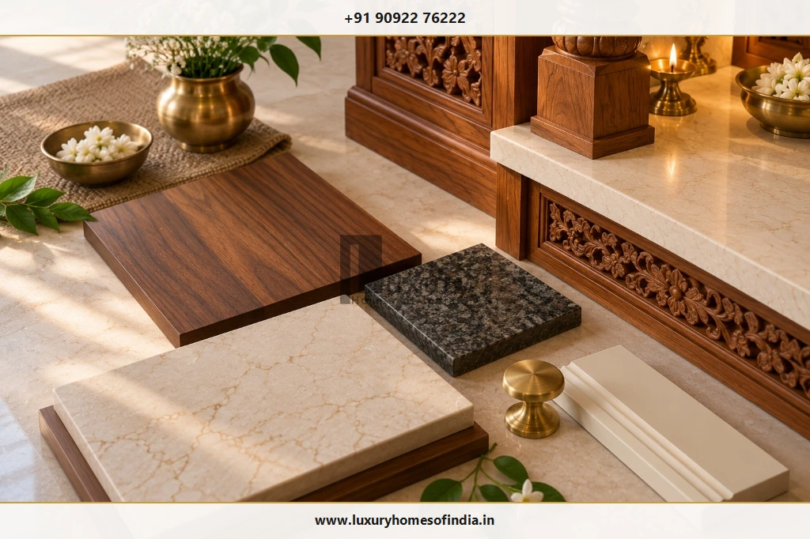
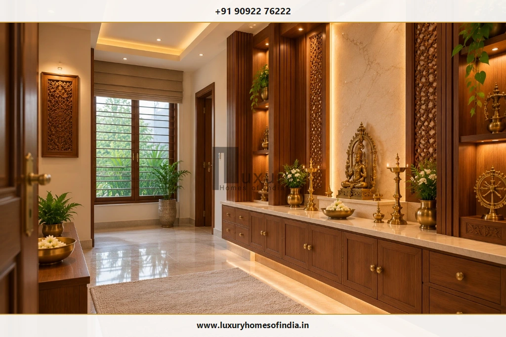
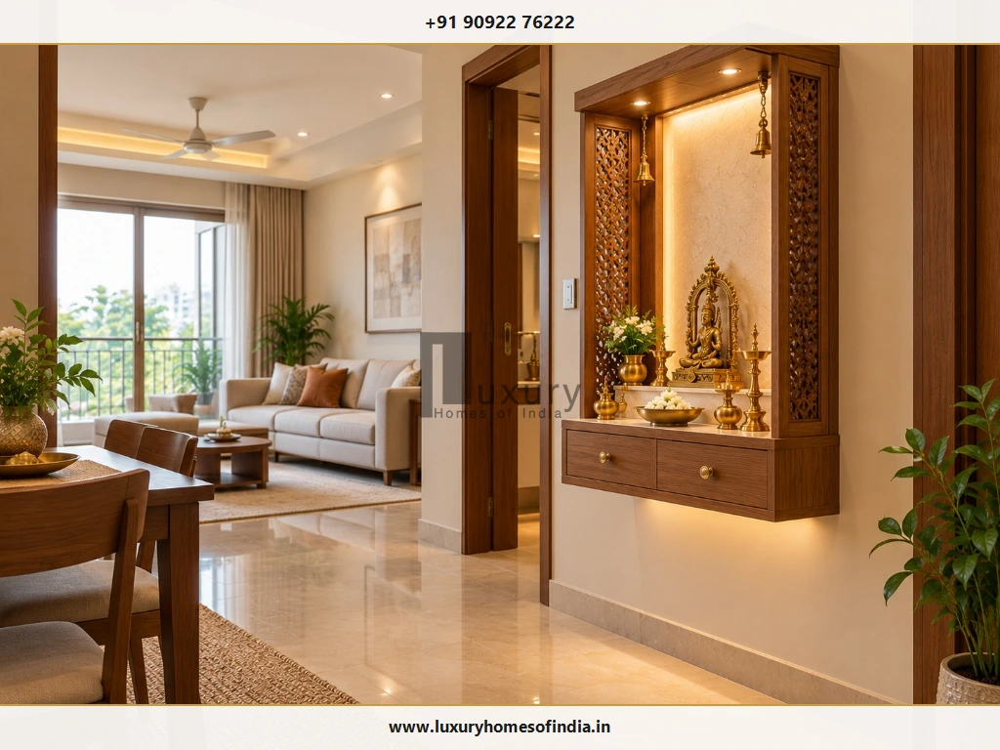

Mandir Design for Home: Traditional, Modern and Space-Saving Ideas
A well-planned mandir design for home creates a dedicated place for prayer while complementing the architecture and interiors of the house. Discover how to balance classical woodcraft, refined stone altars, minimalist floating shrines, layered lighting, and Vastu planning for apartments, independent houses, and luxury villas.

Executive Summary: Designing a Sacred Sanctuary at Home
Whether you are styling a compact 2BHK city apartment in Chennai, a suburban duplex, or a multi-acre luxury villa, the home mandir is the spiritual epicenter of the residence. A successful prayer space is not measured by the sheer volume of gilded ornament, but by how comfortably it supports your family's daily rituals, harmonizes with surrounding finishes, preserves unobstructed circulation, and ensures absolute safety with open diya flames.
- Typological Fit: Wall-mounted units for apartments; dedicated sanctuaries for villas.
- Material Authenticity: Kiln-seasoned teak, Makrana marble, and brushed brass trims.
- Directional Vastu: North-East (Ishanya) orientation with East-facing deities.
- Ergonomics & Safety: Concealed soft-close storage and non-combustible diya platters.
Table of Contents
1. Popular Mandir Design Ideas for Home
The best mandir design balances visual character with the specific devotional habits of the household. Rather than treating the shrine as an isolated showpiece, select an architectural style that echoes your residence:

Traditional Wooden Mandir
A wooden mandir brings timeless warmth, rich spiritual gravitas, and artisanal craft into the home. Classical hallmarks include hand-sculpted temple pillars, multi-foil arches, floral rosettes, and an elevated pedestal. Solid teakwood (CP Teak or Nilambur) or seasoned rosewood provides exceptional stability in coastal humidity while harmonizing with timber doors and ceiling beams.
Modern Minimalist Mandir
In contemporary apartments and minimalist residences, a modern mandir emphasizes clean geometric planes, unadorned surfaces, and concealed storage. A floating stone altar set against a fluted wood-batten or backlit translucent onyx panel establishes a serene prayer setting that feels perfectly integrated into modern living spaces.
Marble Mandir Design
White Makrana marble and pristine Italian stone evoke the sacred purity of ancient North and South Indian temples. Marble can be utilized for the entire mandir, or selectively as an altar countertop and carved backdrop. Because natural stone is exceptionally heavy, wall-mounted marble units require structural load verification and chemical wall fasteners.
Wall-Mounted Floating Mandir
Ideal for compact apartments and hallway niches, a wall-mounted floating shrine preserves 100% of floor space, facilitating easy cleaning and unimpeded circulation. An integrated drawer below the counter conceals wicks, camphor, and matchboxes cleanly.
Floor-Standing Mandir
A floor-standing unit commands greater presence in a spacious living room, independent house, or dedicated pooja room. It easily accommodates full-depth drawers, multi-tiered deity steps, and tall brass kuthuvilakku standing lamps.
Mandir with Sliding or Folding Doors
Doors with carved jaali screens, brass filigree, or fluted glass maintain visual neatness when the shrine is not in active use. Sliding or bi-fold shutters are especially useful in compact rooms where hinged swinging doors might collide with furniture. Safety Rule: Never leave lit lamps burning inside a closed cabinet.
Mandir with a Decorative Backdrop
A textured backdrop defines the prayer area against open living walls. Options range from CNC laser-cut wood jaalis and fluted terracotta tiles to backlit natural stone and brushed brass panels.
2. Which Mandir Design Suits Your Home?
Start with your floor plan and spatial volume rather than choosing a decorative finish first. The table below outlines recommended design typologies matched to different residential layouts:
| Home Typology | Recommended Mandir Formats | Primary Planning Priority |
|---|---|---|
| 1 BHK Apartment | Wall-mounted floating mandir or compact corner unit (18–24″ width). | Preserve precious floor circulation and maximize vertical space. |
| 2 BHK Apartment | Recessed wall niche or floating unit with CNC jaali side screens. | Seamless integration with living/dining room millwork. |
| 3 BHK Apartment | Cabinet-style floor shrine or dedicated prayer alcove (25–40 sq ft). | Balance dedicated functional storage with seated prayer clearance. |
| Independent House | Floor-standing handcrafted mandir or dedicated pooja room (40–70 sq ft). | Harmonize with home's architectural doors, windows, and Vastu orientation. |
| Luxury Villa | Bespoke architectural temple pavilion or dedicated sacred room (60–120 sq ft). | Artisanal craftsmanship, backlit stone walls, and smart lighting. |
| Heritage Home | Chettinad carved timber shrine, Athangudi tile border, and brass hardware. | Preserve regional Tamil architectural heritage and classical proportions. |
3. Choosing Materials for a Home Mandir
Material selection determines not only the visual grandeur of the mandir but also its fire resistance, structural load, and long-term durability in Chennai's humid coastal climate:

Wood & Engineered Panels
Solid seasoned teak (CP Teak, Burma Teak) for carved pillars; IS 710 marine-grade ply with natural veneers for carcass cabinetry to resist humidity.
Marble, Granite & Quartz
Makrana white marble, Italian Statuario, or dense quartz for altar platforms. Non-porous stone counters resist daily turmeric, milk, and oil spills.
Solid Cast Brass & Bronze
Hanging temple bells, drawer knobs, threshold strips, and kuthuvilakku lamps. Specify lacquered brass to prevent tarnishing in coastal saline air.
4. Mandir Design for the Living Room
In modern urban apartments, the living room frequently hosts the home mandir. Integrating a sacred space into a shared entertaining area requires defining a clear visual boundary while preserving natural domestic circulation:

- Dedicated Accent Wall: Frame the mandir section with fluted wood battens or an elegant stone slab to establish a distinct spiritual alcove.
- Semi-Private Jaali Partitions: Use CNC laser-cut wood or metal jaalis to create visual screening without blocking light or making the room feel smaller.
- Cabinet-Style Enclosures: Opt for bi-fold wooden shutters with frosted glass or brass filigree to close the mandir respectfully during large social gatherings.
- Unobstructed Movement: Ensure sofas, coffee tables, and dining chairs are positioned so devotees can approach the mandir freely without navigating obstacles.
5. Small Mandir Design for Compact Homes
A compact mandir does not need elaborate ornamentation to feel serene and sacred. In a smaller apartment, disciplined proportions and thoughtful storage are far more effective than an oversized temple that impedes movement.

Measure Exact Spatial Clearances
Record usable wall width, projection depth (typically 12 to 18 inches), and vertical ceiling clearance before commissioning custom millwork.
Verify Wall Substrate Strength
Mount floating units strictly onto solid brick or concrete walls with chemical anchor fasteners. Avoid hanging heavy units on hollow plasterboard partitions.
6. Luxury Mandir Design for Premium Homes
In independent bungalows and luxury villas, the mandir can be conceptualized as an integral architectural feature. Bespoke timber shrines, backlit Italian Statuario backdrops, hand-cast brass temple gates, and ambient architectural cove lighting create an enduring sacred atmosphere. True luxury resides in material authenticity, seamless joinery, and concealed functionality.
For specialized villa design ideas, explore our companion architectural guide on Luxury Villa Pooja Room Design in Chennai.
7. Mandir Placement and Vastu Considerations
Vastu Shastra provides time-honored guidelines for harmonizing energy flows within the home. In any residential layout, several key placement principles are universally respected:
- Auspicious Orientation: The North-East (Ishanya) quadrant is traditionally considered the most auspicious. East and North orientations are also widely favored.
- Devotee Stance: Face East or North while performing daily prayers; consecrated idols should not face South.
- Plumbing & Sanitary Clearance: Never place a mandir sharing a common wall with a bathroom, or directly beneath an upper-floor toilet or drainage stack.
- Elevated Altar Level: Ensure deity idols sit above chest level when devotees are seated or standing for prayer.
For detailed room-by-room analysis, read our dedicated guide on Pooja Room Placement as per Vastu.
8. Lighting Ideas for a Home Mandir
Lighting in a home mandir should support devotional focus without producing harsh reflections or glare:
- Concealed Warm LED Coves (2700K – 3000K): Indirect illumination hidden behind backdrops creates a gentle spiritual halo.
- Focused Micro-Downlights: Narrow-beam (24°), high-CRI (90+) spotlights illuminate consecrated brass idols cleanly.
- Decorative Pendant Lamps: Traditional brass hanging lamps or filigree pendants add artisanal charm where ceiling height allows.
- Diya Flame Separation: Keep open oil flames on heat-resistant stone counters, maintaining at least 18 inches of clearance from overhead timber shelves.
9. Mandir Colours and Finishes
A restrained, intentional colour scheme allows the consecrated idols and craftsmanship to remain the focal point:
Makrana marble or white quartz with brushed brass trims. Luminous, pure, and uplifting.
Warm golden-brown teakwood offset by off-white lime plaster. The timeless classical combination.
Deep American walnut cabinetry paired with neutral travertine or beige stone surfaces.
10. Storage and Practical Details
Plan storage before approving joinery fabrication. Dedicated drawers for cotton wicks, matchboxes, camphor, and dhoop cups keep the sacred counter clear of daily clutter. Incorporate heavy-duty pull-out prasadam ledges beneath the main altar counter to hold heavy brass offering plates and aarti lamps securely.
11. Common Mandir Design Mistakes to Avoid
Ordering Before Measuring
Purchasing pre-fabricated shrines without verifying doorway swings, wall projection depth, and seated clearance causes awkward clashes.
Ignoring Structural Anchor Loads
Hanging heavy marble or solid hardwood shrines on hollow drywall leads to catastrophic failure. Use structural anchor bolts on solid masonry.
Overcrowding the Altar Surface
Crowding too many framed images and idols onto a shallow counter impedes daily cleaning and creates visual disorder.
Neglecting Smoke Ventilation
Enclosing lit incense and diyas inside unventilated units causes oily soot to deposit permanently on wood grain and stone.
12. What Determines the Cost of a Home Mandir?
The cost of a home mandir depends on dimensions, material authenticity, artisanal carving, hardware mechanisms, and installation scope. In Chennai, investments generally span three tiers:
₹40,000 – ₹1,20,000
Designed for compact apartments and corridor niches.
- • Marine ply with natural wood veneer
- • Composite quartz altar ledge
- • Concealed warm LED backlight
- • Soft-close lower storage drawer
₹1,50,000 – ₹3,80,000
Standard floor-standing shrine for living rooms or 3BHK flats.
- • CP Teak framing & CNC jaali shutters
- • Makrana white marble altar platform
- • Pull-out prasadam tray & brass handles
- • Multi-point dimmable LED illumination
₹4,50,000 – ₹12,00,000+
Custom-sculpted temple shrine for villas and luxury bungalows.
- • Hand-carved solid Burma Teak sanctum
- • Backlit Italian onyx or Statuario slab
- • Cast brass temple bells & threshold
- • Integrated smart lighting & exhaust
Itemized Quotation Advice
Request a line-item quotation confirming timber species (e.g. CP Teak vs commercial hardwood), marble thickness (18mm vs 25mm), hardware brands (Blum, Hettich, Hafele), surface finish coats (PU vs melamine), and installation scope before approving custom millwork.
Frequently Asked Questions
Design a Bespoke Home Mandir with LHI
The right mandir design for home combines sacred devotion with thoughtful residential planning. Whether you prefer a hand-carved teakwood shrine, a floating apartment unit, an elegant marble altar, or a dedicated temple sanctuary, early coordination ensures timeless beauty and effortless daily use.
Luxury Homes of India (LHI) specializes in bespoke architectural planning, turnkey villa construction, and premium interior execution across Chennai and Tamil Nadu. Contact our principal design team to bring your sacred vision to life.